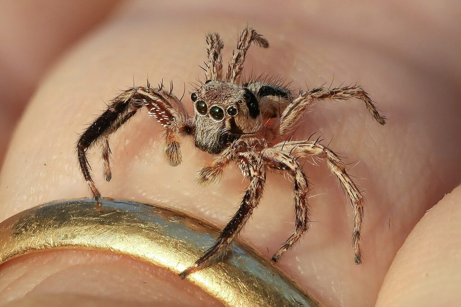

पीटर्स जंपिंग मकड़ीPeters' Jumping Spider
Plexippus petersi · Salticidae · SPD-0029

- Scientific name वैज्ञानिक नाम
- Plexippus petersi (Karsch, 1878)
- Family कुल
- Salticidae
- Hindi हिंदी
- पीटर्स जंपिंग मकड़ी
- Local names स्थानीय नाम
- peters jumping spider, spider
- Status here यहाँ की स्थिति
- native
- Movement आवागमन
- Resident, here all year
- Known from कहाँ दर्ज
- Others have published records from the wider Awadh–Purvanchal plain, none yet from Basti–Ayodhya अवध–पूर्वांचल से दूसरों के प्रकाशित अभिलेख, बस्ती–अयोध्या से अभी नहीं
- IUCN IUCN
- not evaluated
- Review समीक्षा
- audited and independently read
When to look कब देखें
Present all year. साल भर मौजूद।
Tell it apart from इनसे अलग पहचानें
पीटर्स जंपिंग मकड़ी / Peters' Jumping Spider
Plexippus petersi (Karsch, 1878) — Salticidae
पीटर्स जंपिंग मकड़ी — कूदने वाली मकड़ी की बहुत ही समान प्रजाति, दीवारों पर रहने वाली, मक्खियों और मच्छरों का शिकार करने वाली। ये दोनों प्रजातियाँ बेहद समान हैं — वास्तव में, बहुत से लोग इन्हें अलग नहीं कर सकते। पीटर्स जंपिंग मकड़ी का पेट थोड़ा व्यापक सफ़ेद पट्टी वाला होता है।
Quick Identification त्वरित पहचान
| Feature | Description | |
|---|---|---|
| Size | Male 8–10 mm; female 10–12 mm | |
| Male | Jet-black with broader white abdominal band than [[pantropical_jumping_spider | Plexippus paykulli]] |
| Female | Greyish-brown | |
| Eyes | Two large forward-facing principal eyes | |
| Behaviour | Wall-surface hunter; turns to face observer |
Field tip: Nearly identical to Plexippus paykulli; the broader white abdominal band in males and subtle cheliceral differences separate them. Often co-occur on the same wall surfaces.
Morphology आकारिकी
| Measurement | Range |
|---|---|
| Body length (male) | 8–10 mm |
| Body length (female) | 10–12 mm |
| Legspan | 12–15 mm |
Male: Jet-black with bold white longitudinal stripe on each side of abdomen — notably broader than in P. paykulli. White spots at rear. Iridescent blue-green chelicerae.
Female: Greyish-brown; less contrastingly patterned.
Legs: Banded black-white.
Ecological Role पारिस्थितिक भूमिका
Wall-surface predator: Stalks and hunts small flying insects on plastered walls and building surfaces. Vision-based active hunter.
Prey: House flies, mosquitoes, small moths, ants, small spiders.
Beneficial: Significant pest control in buildings without chemical insecticides.
Life Cycle / Phenology जीवन चक्र
| Month | Event |
|---|---|
| Feb–Apr | Spiderlings emerge |
| May–Sep | Growth and maturation |
| Sep–Nov | Mating; egg sacs laid |
| Nov–Jan | Overwintering as eggs |
Single generation per year.
Agricultural / Human Relevance कृषि प्रासंगिकता
Household pest control: Effective predator of flies and mosquitoes. In regions with malaria burden, presence on indoor walls provides meaningful pest reduction.
Safety: Harmless; too small to bite humans effectively. No medically significant venom.
Expected Locally स्थानीय रूप से अपेक्षित
Not a field record. Written from published accounts for eastern Uttar Pradesh. No confirmed local sighting yet — if you have seen it, that is what the atlas needs.
अभी तक स्थानीय पुष्टि नहीं। यह विवरण प्रकाशित स्रोतों से है, किसी अवलोकन से नहीं।
Plexippus petersi is expected year-round on walls, window sills, and door frames of buildings. Often co-occurs with P. paykulli; the two may share the same wall surfaces.
Distribution वितरण
Global range: Africa and Asia — widespread tropical and subtropical distribution.
In India: Common across the country on building surfaces.
In Uttar Pradesh: Recorded across the state.
In Basti district / eastern UP: Expected year-round in buildings.
Research Questions शोध प्रश्न
- Can the broader abdominal band reliably distinguish P. petersi from P. paykulli?
- क्या दोनों कूदने वाली मकड़ियों की आबादी दीवार पर मिश्रित होती है? (Do populations of both species co-occur on the same walls?)
- Do the two species hunt similar prey sizes?
- Courtship display differences?
- Which species is more common in eastern UP?
Similar Species मिलती-जुलती प्रजातियाँ
| Species | Difference | |
|---|---|---|
| [[pantropical_jumping_spider | Plexippus paykulli]] | Very similar; narrower male abdominal band; subtle cheliceral structure differs |
Field rule: Black jumping spider on wall with broad white abdominal band on male, = Plexippus petersi.
Taxonomy & Classification वर्गीकरण
Original description. Karsch, 1878.
Subspecies. Monotypic.
Family and order placement. Order Araneae, family Salticidae.
IUCN status rationale. Not assessed; common and stable.
Photo Gallery फोटो गैलरी
No photos yet — add field photos to media/species/peters_jumping_spider/ and run node scripts/sync_photos.js.
References संदर्भ
- Karsch, F. (1878). Versuch einer Darstellung der Spinnenfauna der Sahara und Ifni. Zeitschrift für die gesammten Naturwissenschaften, 52.
- Tikader, B.K. & Biswas, B. (1981). Spider fauna of India. Zoological Survey of India.
- Nentwig, W., et al. (2024). Spiders of Europe. www.wsc.nmbe.ch.
- World Spider Catalog. (2024). Retrieved from: http://www.wsc.nmbe.ch
- GBIF Occurrence Data — Plexippus petersi, Africa and Asia (2000–2024). GBIF taxon key: [to be filled by script].
- Foelix, R.F. (2011). Biology of Spiders (3rd ed.). Oxford University Press.
Source file: species/fauna/spiders/peters_jumping_spider.md